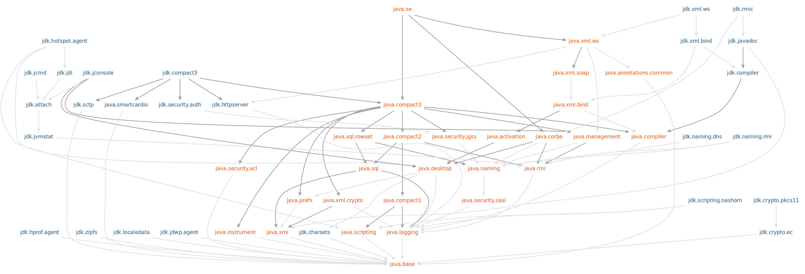

Java 9 Modules

By
Narendran Solai Sridharan
Key Items
Module in Java
Modular JDK
Modularity Maturity Model
Working of Module System
Migration to Java 9
Module in Java
Everything is a module in Java 9.
Modular JDK

Working of Module System
Module Path & Module Resolution
All modules should be placed in the Module path. Entire classpath is considered as one single "Unnamed" Module.
Types of Module Resolution
Compile Time Resolution
Run Time Resolution
Cyclic Dependencies
Add Image for Cyclic Dependency & Resolution
Split Packages
Add Image for Split package
Impact on Reflection
Add Image of Reflection
Implicit Dependency
Optional Dependency
Versioning Modules
Testing Modules
Types of Modules
Automatic Modules
Unnamed Modules
Open Modules
Other kind of Classification
Aggregator Module
Incubator Modules
Layers
Images of Layers Boot Layer Application Layers Parent Layer, Configuration * System Modules * Platform Modules * Application Modules
Modularity Rail Road Diagram

Migration to Java 9
Important Tools
jshell
jdeps
jLink
jmod
Tool Enhancements
javac
java
jar
javadoc
Type of Artifacts
MR Jar
JMod
JImage